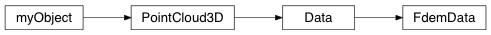

FdemData¶
@FdemData_Class Module describing an EMData Set where channels are associated with an xyz co-ordinate
-
class
geobipy.src.classes.data.dataset.FdemData.FdemData(nPoints=1, nFrequencies=1, systems=None)¶ Class extension to geobipy.Data defining a Fourier domain electro magnetic data set
FdemData(nPoints, nFrequencies, system)
Parameters: - nPoints (int, optional) – Number of observations in the data set
- nFrequencies (int, optional) – Number of measurement frequencies
- system (str or geobipy.FdemSystem, optional) –
- If str: Must be a file name from which to read FD system information.
- If FdemSystem: A deepcopy is made.
Returns: out – Contains x, y, z, elevation, and data values for a frequency domain dataset.
Return type: Notes
FdemData.read() requires a data filename and a system class or system filename to be specified. The data file is structured using columns with the first line containing header information. The header should contain the following entries Line [ID or FID] [X or N or northing] [Y or E or easting] [Z or DTM or dem_elev] [Alt or Laser or bheight] [I Q] … [I Q] Do not include brackets [] [I Q] are the in-phase and quadrature values for each measurement frequency.
If a system filename is given, it too is structured using columns with the first line containing header information Each subsequent row contains the information for each measurement frequency
freq tor tmom tx ty tz ror rmom rx ry rz 378 z 1 0 0 0 z 1 7.93 0 0 1776 z 1 0 0 0 z 1 7.91 0 0 …
where tor and ror are the orientations of the transmitter/reciever loops [x or z]. tmom and rmom are the moments of the loops. t/rx,y,z are the loop offsets from the observation locations in the data file.
-
Bcast(world, root=0)¶ Broadcast the FdemData using MPI
Parameters: world (mpi4py.MPI.COMM_WORLD) – MPI communicator Returns: out – A copy of the data on each core Return type: geobipy.FdemData Examples
>>> from mpi4py import MPI >>> from geobipy import FdemData
>>> world = MPI.COMM_WORLD
>>> rank = world.rank
>>> if (rank == 0): # Only the master reads in the data >>> D = FdemData() >>> D.read(dataFile, systemFile) >>> else: >>> D = FdemData() # Must instantiate an empty object to Bcast
>>> D2 = D.Bcast(world)
-
Scatterv(starts, chunks, world, root=0)¶ Distributes the FdemData between all cores using MPI
Parameters: - starts (array of ints) – 1D array of ints with size equal to the number of MPI ranks. Each element gives the starting index for a chunk to be sent to that core. e.g. starts[0] is the starting index for rank = 0.
- chunks (array of ints) – 1D array of ints with size equal to the number of MPI ranks. Each element gives the size of a chunk to be sent to that core. e.g. chunks[0] is the chunk size for rank = 0.
- world (mpi4py.MPI.COMM_WORLD) – The MPI communicator
Returns: out – The data distributed amongst cores
Return type: geobipy.FdemData
Examples
>>> from mpi4py import MPI >>> from geobipy import FdemData >>> import numpy as np
>>> world = MPI.COMM_WORLD
>>> rank = world.rank
>>> if (rank == 0): # Only the master reads in the data >>> D = FdemData() >>> D.read(dataFile, systemFile) >>> else: >>> D = FdemData() # Must instantiate an empty object to Bcast
>>> # In this example, assume there are 10 data and 4 cores >>> start = np.asarray([0, 2, 4, 6]) >>> chunks = np.asarray([2, 2, 2, 4])
>>> D2 = D.Scatterv(start, chunks, world)
-
data¶ The data
-
fileInformation()¶ Description of the data file.
-
fromHdf(grp, **kwargs)¶ Reads the object from a HDF group
-
getDataPoint(index=None, fiducial=None)¶ Get the ith data point from the data set
Parameters: - index (int, optional) – Index of the data point to get.
- fiducial (float, optional) – Fiducial of the data point to get.
Returns: out – The data point.
Return type: geobipy.FdemDataPoint
Raises: Exception– If neither an index or fiducial are given.
-
getFrequency(channel, system=0)¶ Return the measurement frequency of the channel
Parameters: - channel (int) – Channel number
- system (int, optional) – System number
Returns: out – The measurement frequency of the channel
Return type: float
-
getLine(line)¶ Gets the data in the given line number
Parameters: line (float) – A line number from the data file Returns: out – A data class containing only the data in the line Return type: geobipy.FdemData
-
getMeasurementType(channel, system=0)¶ Returns the measurement type of the channel
Parameters: - channel (int) – Channel number
- system (int, optional) – System number
Returns: out – Either “In-Phase ” or “Quadrature “
Return type: str
-
nActiveData¶ Number of active data per data point.
For each data point, counts the number of channels that are NOT nan.
Returns: out – Number of active data Return type: int
-
plot(xAxis='index', channels=None, **kwargs)¶ Plots the specifed channels as a line plot.
Plots the channels along a specified co-ordinate e.g. ‘x’. A legend is auto generated.
Parameters: - xAxis (str) – If xAxis is ‘index’, returns numpy.arange(self.nPoints) If xAxis is ‘x’, returns self.x If xAxis is ‘y’, returns self.y If xAxis is ‘z’, returns self.z If xAxis is ‘r2d’, returns cumulative distance along the line in 2D using x and y. If xAxis is ‘r3d’, returns cumulative distance along the line in 3D using x, y, and z.
- channels (ints, optional) – The indices of the channels to plot. All are plotted if channels is None.
- noLegend (bool) – Do not attach a legend to the plot. Default is False, a legend is attached.
Returns: - ax (matplotlib.axes) – Plot axes handle
- legend (matplotlib.legend.Legend) – The attached legend.
See also
geobipy.customPlots.plot()- For additional keyword arguments
-
plotLine(line, system=0, xAxis='index', **kwargs)¶ Plot the specified line
-
predictedData¶ The predicted data
-
read(dataFilename, systemFilename)¶ Read in both the Fdem data and FDEM system files
The data file is structured using columns with the first line containing header information. The header should contain the following entries Line [ID or FID] [X or N or northing] [Y or E or easting] [Z or DTM or dem_elev] [Alt or Laser or bheight] [I Q] … [I Q] Do not include brackets [] [I Q] are the in-phase and quadrature values for each measurement frequency.
If a system filename is given, it too is structured using columns with the first line containing header information Each subsequent row contains the information for each measurement frequency
freq tor tmom tx ty tz ror rmom rx ry rz 378 z 1 0 0 0 z 1 7.93 0 0 1776 z 1 0 0 0 z 1 7.91 0 0 …
where tor and ror are the orientations of the transmitter/reciever loops [x or z]. tmom and rmom are the moments of the loops. t/rx,y,z are the loop offsets from the observation locations in the data file.
-
readSystemFile(systemFilename)¶ Reads in the system handler using the system file name
-
std¶ The standard deviation